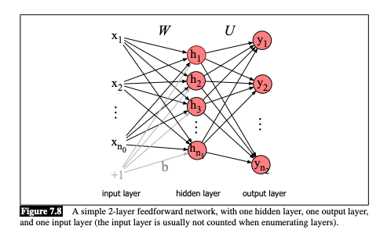
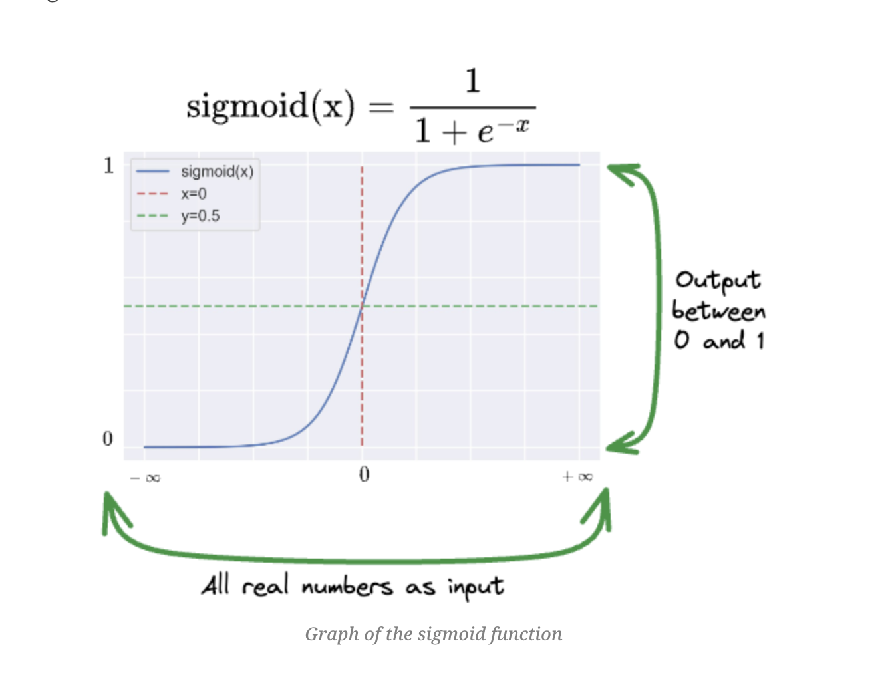
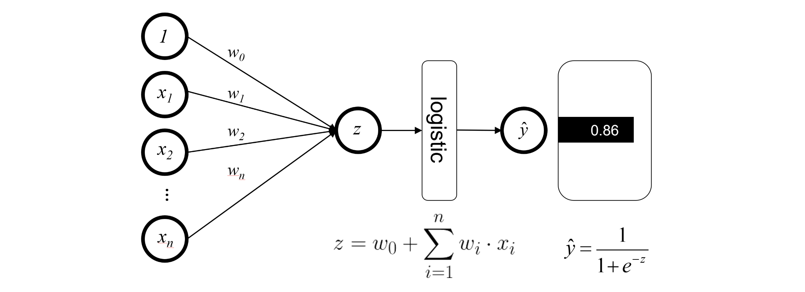
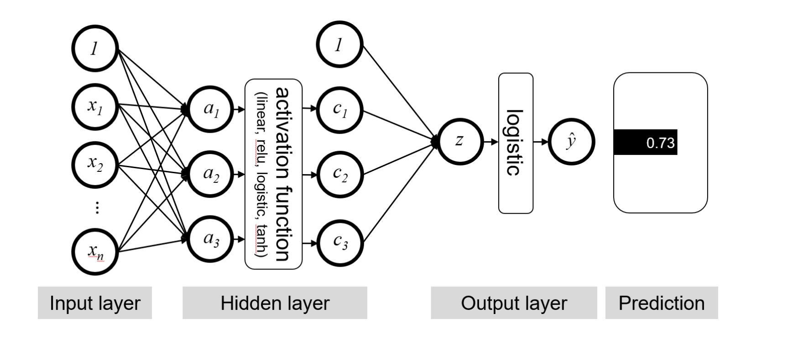
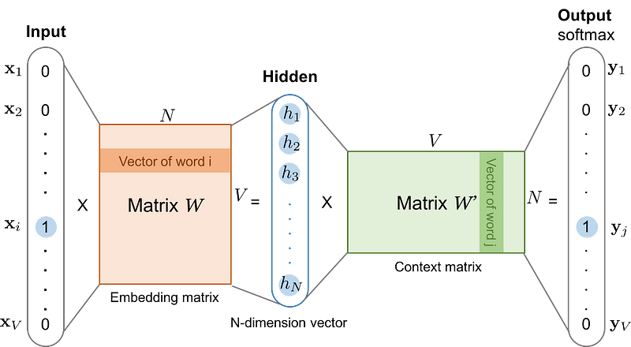

Advanced Text-As-Data - Winter School - Iesp UERJ
Day 1: Word Representation & Introduction to Neural Networks
Professor: Tiago Ventura
Welcome to Advanced Text-as-Data: Introduction
Logistics
All materials will be on this website:
Syllabus is more dense than we can cover in a week. Take your time to work through it!
Our time: Lectures in the Afternoon, and code/exercises for you to work through at your time.
This is an advanced class in text-as-data. It requires:
some background in programing
some notion of probability theory, particularly maximum likelihood estimation (LEGO III at IESP)
You have a TA: Felipe Lamarca. Use him for your questions!
Classes in English, but feel free to ask questions in portuguese if you prefer!
Motivation
Rise of the digital information age

Official Documents: Congressional Speeches, Bills, Press Releases, Transcripts, from all over the world!!

The internet: News, Comments, Blogs, etc…

What is this class about?
For many years, social scientists uses text in their empirical analysis:
Close reading of documents.
Qualitative Analysis of interviews
Content Analysis
Digital Revolution:
- Production of text increased
- The computational capacity to analyze them at scale as well.
- Powerful computational models became easily accessible.
This class covers methods (and many applications) of using Text as Data to answer social science problems and test social science theories
But… with an modern flavor.
- Deep Learning Revolution / Large Language Models / Representation Learning.
Text Representation: From Sparse to Dense Vector
Vector Space Model
To represent documents as numbers, we will use the vector space model representation:
A document \(D_i\) is represented as a collection of features \(W\) (words, tokens, n-grams..)
Each feature \(w_i\) can be place in a real line, then a document \(D_i\) is a point in a \(W\) dimensional space
Imagine the sentence below: “If that is a joke, I love it. If not, can’t wait to unpack that with you later.”
Sorted Vocabulary =(a, can’t, i, if, is, it, joke, later, love, not, that, to, unpack, wait, with, you”)
Feature Representation = (1, 1, 1, 2, 1, 1, 1, 1, 1, 1, 2, 1, 1, 1, 1, 1)
Features will typically be the n-gram (mostly unigram) frequencies of the tokens in the document, or some function of those frequencies
Now each document is now a vector (vector space model)
- stacking these vectors will give you our workhose representation for text: Document Feature Matrix
Visualizing Vector Space Model
Documents
Document 1 = “yes yes yes no no no”
Document 2 = “yes yes yes yes yes yes”
Visualizing Vector Space Model
In the vector space, we can use geometry to build well-defined comparison measures between the documents

6. Document-Feature Matrix
Vector Space Model vs Representation Learning
This vector space representation is super useful, and has been used in many many many applications in computational linguistics and social science applications of text-as-data. Including:
Descriptive statistics of documents (count words, text-similarity, complexity, etc..)
Supervised Machine Learning Models for Text Classification (DFM becomes the input of the models)
Unsupervised Machine Learning (Topic Models & Clustering)
But… Embedded in this model, there is the idea we represent words as a one-hot encoding.
- “cat”: [0,0, 0, 0, 0, 0, 1, 0, ….., V] , on a V dimensional vector
- “dog”: [0,0, 0, 0, 0, 0, 0, 1, …., V], on a V dimensional vector
What these vectors look like?
really sparse
those vectors are orthogonal
no natural notion of similarity
How can we embed some notion of meaning in the way we represent words?
Distributional Semantics
“you shall know a word by the company it keeps.” J. R. Firth 1957
Distributional semantics: words that are used in the same contexts tend to be similar in their meaning.
How can we use this insight to build a word representation?
Move from sparse representation to dense representation
Represent words as vectors of numbers with high number of dimensions
Each feature on this vectors embeds some information from the word (gender? noun? sentiment? stance?)
Learn this representation from the unlabeled data.
Sparse vs Dense Vectors
One-hot encoding / Sparse Representation:
cat = \(\begin{bmatrix} 0,0, 0, 0, 0, 0, 1, 0, 0 \end{bmatrix}\)
dog = \(\begin{bmatrix} 0,0, 0, 0, 0, 1, 0, 0, 0 \end{bmatrix}\)
Word Embedding / Dense Representation:
cat = \(\begin{bmatrix} 0.25, -0.75, 0.90, 0.12, -0.50, 0.33, 0.66, -0.88, 0.10, -0.45 \end{bmatrix}\)
dog = \(\begin{bmatrix} 0.25, 1.75, 0.90, 0.12, -0.50, 0.33, 0.66, -0.88, 0.10, -0.45 \end{bmatrix}\)
With colors and real word vectors
Error in knitr::include_graphics("./week7_figs/embed_color.png"): Cannot find the file(s): "./week7_figs/embed_color.png"Source: Illustrated Word2Vec
Word Embeddings
Encoding similarity: vectors are not ortogonal anymore!
Automatic Generalization: learn about one word allow us to automatically learn about related words
Encodes Meaning: by learning the context, I can learn what a word means.
As a consequence:
Word Embeddings improves by ORDERS OF MAGNITUDE several Text-as-Data Tasks.
Allows to deal with unseen words.
Form the core idea of state-of-the-art models, such as LLMs.
Deep Learning for Text Analysis
Introduction to Deep Learning
Basics of Machine Learning
Deep Learning is a subfield of machine learning based on using neural networks models to learn.
As in any other statistical model, the goal of machine learning is to use data to learn about some output.
\[ y = f(X) + \epsilon\]
Where:
\(y\) is the outcome/dependent/response variable
\(X\) is a matrix of predictors/features/independent variables
\(f()\) is some fixed but unknown function mapping X to y. The “signal” in the data
\(\epsilon\) is some random error term. The “noise” in the data.
Linear models (OLS)
The simplest model we can use is an linear model (the classic OLS regression)
\[ y = b_0 + WX + \epsilon\]
Where:
- \(W\) is a vector of dimension p,
- \(X\) is the feature vector of dimension p
- \(b\) is a bias term (intercept)
Using Matrix Algebra
\[\mathbf{W} = \begin{bmatrix} w_1 & w_2 & \dots & w_p\end{bmatrix}\]
\[\mathbf{X} = \begin{bmatrix} X_1 \\ X_2 \\ X_3 \\ \vdots \\ X_p \end{bmatrix}\]
With matrix multiplication:
\[\mathbf{W} \mathbf{X} + b = w_1 X_1 + w_2 X_2 + \dots + w_p X_p + b\]
Logistic Regression
If we want to model some type of non-linearity, necessary for example when our outcome is binary, we can add a transformation function to make things non-linear:
\[ y = \sigma (b_0 + WX + \epsilon)\]
Where:
\[ \sigma(b_0 + WX + \epsilon) = \frac{1}{1 + \exp(-b_0 + WX + \epsilon)}\]
Logistic Regression as a Neural Network
Let’s assume we have a simple model of voting. We want to predict if individual \(i\) will vote (\(y=1\)), and we will use four socio demographic factors to make this prediction.
Classic statistical approach with logistic regression:
\[ \hat{P(Y_i=1|X)} = \sigma(b_0 + WX + \epsilon) \] We use MLE (Maximum Likelihood estimation) to find the parameters \(W\) and \(b_0\). We assume:
\[ Y_i \sim \text{Bernoulli}(\pi_i) \]
The likelihood function for \(n\) independent observations is:
\[L(W, b_0) = \prod_{i=1}^{n} \pi_i^{y_i} (1 - \pi_i)^{1 - y_i}.\]
Neural Network Graphical Representation

Neural Networks
A Neural Network is equivalent to stacking multiple logistic regressions vertically and repeat this process multiple times across many layers.
As a Matrix, instead of:
\[\mathbf{W}_{previous} = \begin{bmatrix} w_1 & w_2 & \dots & w_p\end{bmatrix}\]
We use this set of parameters:
\[ \mathbf{W} = \begin{bmatrix} w_{11} & w_{12} & w_{13} & \dots & w_{1p} \\ w_{21} & w_{22} & w_{23} & \dots & w_{2p} \\ w_{31} & w_{32} & w_{33} & \dots & w_{3p} \\ \vdots & \vdots & \vdots & \vdots & \vdots \\ w_{k1} & w_{k2} & w_{k3} & \dots & w_{kp} \end{bmatrix} \]
Then, every line becomes a different logistic regression
\[\mathbf{WX} = \begin{bmatrix} \sigma(w_{11} X_1 + w_{12} X_2 + \dots + w_{1p}X_p) \\ \sigma(w_{21} X_1 + w_{22} X_2 + \dots + w_{2p}X_p) \\ \sigma(w_{31} X_1 + w_{32} X_2 + \dots + w_{3p}X_p )\\ \vdots \\ \sigma(w_{k1} X_1 + w_{k2} X_2 + \dots + w_{kp}X_p) \end{bmatrix}\] We then combine all of those with another set of parameters:
\[ \begin{align*} \mathbf{HA} &= h1 \cdot \sigma(w_{11} X_1 + w_{12} X_2 + \dots + w_{1p}X_p)\\ &+ h_2\cdot \sigma(w_{21} X_1 + w_{22} X_2 + \dots + w_{2p}X_p)\\ &+ h_3 \cdot \sigma (w_{31} X_1 + w_{32} X_2 + \dots + w_{3p}X_p)\\ &+ \dots + h_k + \sigma(w_{k1} X_1 + w_{k2} X_2 + \dots + w_{kp}X_p) \end{align*} \]
Feed Forward on a Deep Neural Network
Key Components
Input: p features (the original data) of an observation are linearly transformed into k1 features using a weight matrix of size k1×p
Embedding Matrices: Paremeters you multiply your data by.
Neurons: Number of dimensions on your embedding matrices
Hidden Layer: the transformation that consists of the linear transformation and an activation function
Output Layer: the transformation that consists of the linear transformation and then (usually) a sigmoid (or some other activation function) to produce the final output predictions

Let’s take a step back!
Weights matrices are just parameters… the \(\beta_s\) of our regression models.
There are MANY of them!! Neural Networks are a black box!
But… they also serve as way to project features (words) in a dense dimensional space.
Remember:
One-hot encoding / Sparse Representation:
cat = \(\begin{bmatrix} 0,0, 0, 0, 0, 0, 1, 0, 0 \end{bmatrix}\)
dog = \(\begin{bmatrix} 0,0, 0, 0, 0, 1, 0, 0, 0 \end{bmatrix}\)
Word Embedding / Dense Representation:
cat = \(\begin{bmatrix} 0.25, -0.75, 0.90, 0.12, -0.50, 0.33, 0.66, -0.88, 0.10, -0.45 \end{bmatrix}\)
dog = \(\begin{bmatrix} 0.25, 1.75, 0.90, 0.12, -0.50, 0.33, 0.66, -0.88, 0.10, -0.45 \end{bmatrix}\)
Deep Neural Network for Textual Data
Estimation: Gradient Descent
Linear Regression
\[\text{RSS} = \sum_{i=1}^{n} (y_i - \widehat{y}_i)^2 \]
Logistic Regression
\[L(\beta) = -\sum_{i=1}^{n} \left( y_i \log(\widehat{y}_i) + (1-y_i)\log(1 - \widehat{y}_i) \right)\]
Fully-Connected Neural Network (Classification, Binary)
\[L(\mathbf{W}) = -\frac{1}{n}\sum_{i=1}^{n} \left( y_i \log(\widehat{y}_i) + (1-y_i)\log(1 - \widehat{y}_i) \right)\]
This is called a binary cross entropy loss function
Updating parameters
Define a loss function
Gradient Descent Algorithm:
Initialize weights randomly
Feed Forward: Matrix Multiplication + Activation function
Get the loss for this iteration
Compute gradient (partial derivatives): \(\frac{\partial J(\mathbf{W})}{\partial \mathbf{W}}\)
Update weights: \(W_{new}: W_{old} -\eta \cdot \frac{\partial J(\mathbf{W})}{\partial \mathbf{W}}\)
Loop until convergence:
Code!
Text-as-Data
Social Media